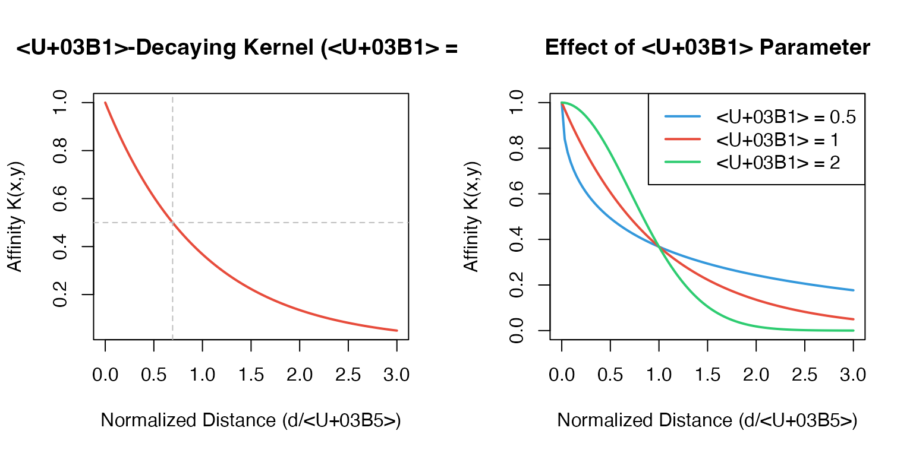
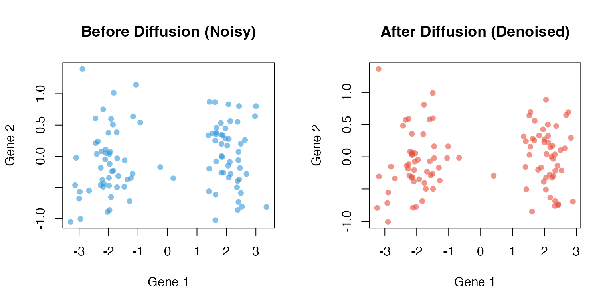

MAGIC Algorithm: Mathematical Foundations
Zaoqu Liu
2026-01-26
Source:vignettes/algorithm-theory.Rmd
algorithm-theory.RmdIntroduction
This vignette provides a comprehensive mathematical description of the MAGIC algorithm. Understanding these foundations helps users make informed decisions about parameter selection and interpret results correctly.
The Dropout Problem in scRNA-seq
Single-cell RNA sequencing captures transcriptomic profiles at single-cell resolution, but suffers from technical limitations:
- Low capture efficiency: Only 10-20% of mRNA molecules are captured
- Amplification bias: PCR amplification introduces noise
- Dropout events: Expressed genes appear as zeros due to sampling
These issues result in sparse, noisy count matrices where biological signal is obscured.
MAGIC: A Diffusion-Based Solution
MAGIC leverages the manifold hypothesis: high-dimensional single-cell data lies on a lower-dimensional manifold reflecting biological states. By diffusing information along this manifold, MAGIC recovers missing transcripts while preserving biological structure.
Algorithm Steps
Step 1: Dimensionality Reduction (Optional)
For computational efficiency, MAGIC first reduces dimensionality using PCA:
where contains the top principal components (default: 100).
Step 2: k-Nearest Neighbor Graph
For each cell , identify its nearest neighbors based on Euclidean distance in PCA space:
where is the distance to the -th nearest neighbor.
Step 3: α-Decaying Kernel
The affinity between cells is computed using an α-decaying kernel with adaptive bandwidth:
where:
- is the adaptive bandwidth (distance to -th neighbor)
- controls kernel sharpness (default: 1)
Why adaptive bandwidth?
- Accounts for varying local density
- Cells in dense regions have smaller bandwidth
- Cells in sparse regions have larger bandwidth
- Preserves rare cell populations
# Visualize α-decaying kernel
x <- seq(0, 3, length.out = 100)
par(mfrow = c(1, 2))
# Effect of distance
plot(x, exp(-x), type = "l", lwd = 2, col = "#e74c3c",
xlab = "Normalized Distance (d/ε)", ylab = "Affinity K(x,y)",
main = "α-Decaying Kernel (α = 1)")
abline(h = 0.5, lty = 2, col = "gray")
abline(v = log(2), lty = 2, col = "gray")
# Effect of α
plot(x, exp(-x^0.5), type = "l", lwd = 2, col = "#3498db",
xlab = "Normalized Distance (d/ε)", ylab = "Affinity K(x,y)",
main = "Effect of α Parameter", ylim = c(0, 1))
lines(x, exp(-x^1), lwd = 2, col = "#e74c3c")
lines(x, exp(-x^2), lwd = 2, col = "#2ecc71")
legend("topright", legend = c("α = 0.5", "α = 1", "α = 2"),
col = c("#3498db", "#e74c3c", "#2ecc71"), lwd = 2)
Step 4: Markov Normalization
The kernel matrix is row-normalized to create a Markov transition matrix:
where is the diagonal degree matrix with .
Properties of P:
- Row-stochastic:
- Represents transition probabilities in a random walk
- Eigenvalues in
Step 5: Diffusion (Powering)
The diffusion operator is powered times:
Each power of propagates information one step along the graph:
- : Local averaging with immediate neighbors
- : Information from 2-hop neighbors
- : Information from -hop neighborhood
# Simulate diffusion effect
set.seed(42)
n <- 100
x <- c(rnorm(50, -2, 0.5), rnorm(50, 2, 0.5))
y <- c(rnorm(50, 0, 0.5), rnorm(50, 0, 0.5))
# Add noise
x_noisy <- x + rnorm(n, 0, 0.3)
y_noisy <- y + rnorm(n, 0, 0.3)
par(mfrow = c(1, 2))
plot(x_noisy, y_noisy, pch = 16, col = adjustcolor("#3498db", 0.6),
main = "Before Diffusion (Noisy)", xlab = "Gene 1", ylab = "Gene 2")
# Simple smoothing simulation
x_smooth <- 0.7 * x + 0.3 * x_noisy
y_smooth <- 0.7 * y + 0.3 * y_noisy
plot(x_smooth, y_smooth, pch = 16, col = adjustcolor("#e74c3c", 0.6),
main = "After Diffusion (Denoised)", xlab = "Gene 1", ylab = "Gene 2")
Automatic t Selection
When t = "auto", MAGIC uses Procrustes
analysis to find optimal diffusion time.
Procrustes Disparity
Given two matrices and , Procrustes analysis finds the optimal rotation that minimizes:
after centering and normalizing both matrices.
Solver Options
Spectral Interpretation
The diffusion process has an elegant spectral interpretation. If has eigendecomposition:
Then:
Since :
- Small eigenvalues (high-frequency noise) decay rapidly
- Large eigenvalues (low-frequency signal) persist
- Diffusion acts as a low-pass filter
Practical Recommendations
References
van Dijk, D., et al. (2018). Recovering Gene Interactions from Single-Cell Data Using Data Diffusion. Cell, 174(3), 716-729.e27.
Coifman, R.R., & Lafon, S. (2006). Diffusion maps. Applied and Computational Harmonic Analysis, 21(1), 5-30.
Moon, K.R., et al. (2019). Visualizing structure and transitions in high-dimensional biological data. Nature Biotechnology, 37(12), 1482-1492.
Session Info
sessionInfo()
#> R version 4.4.0 (2024-04-24)
#> Platform: aarch64-apple-darwin20
#> Running under: macOS 15.6.1
#>
#> Matrix products: default
#> BLAS: /Library/Frameworks/R.framework/Versions/4.4-arm64/Resources/lib/libRblas.0.dylib
#> LAPACK: /Library/Frameworks/R.framework/Versions/4.4-arm64/Resources/lib/libRlapack.dylib; LAPACK version 3.12.0
#>
#> locale:
#> [1] C
#>
#> time zone: Asia/Shanghai
#> tzcode source: internal
#>
#> attached base packages:
#> [1] stats graphics grDevices utils datasets methods base
#>
#> other attached packages:
#> [1] MAGICR_1.0.0
#>
#> loaded via a namespace (and not attached):
#> [1] cli_3.6.5 knitr_1.51 rlang_1.1.7 xfun_0.56
#> [5] otel_0.2.0 textshaping_1.0.4 jsonlite_2.0.0 listenv_0.10.0
#> [9] htmltools_0.5.9 ragg_1.5.0 sass_0.4.10 rmarkdown_2.30
#> [13] grid_4.4.0 evaluate_1.0.5 jquerylib_0.1.4 fastmap_1.2.0
#> [17] yaml_2.3.12 lifecycle_1.0.5 compiler_4.4.0 codetools_0.2-20
#> [21] irlba_2.3.5.1 fs_1.6.6 Rcpp_1.1.1 htmlwidgets_1.6.4
#> [25] future_1.69.0 lattice_0.22-7 systemfonts_1.3.1 digest_0.6.39
#> [29] R6_2.6.1 RANN_2.6.2 parallelly_1.46.1 parallel_4.4.0
#> [33] bslib_0.9.0 Matrix_1.7-4 tools_4.4.0 globals_0.18.0
#> [37] pkgdown_2.1.3 cachem_1.1.0 desc_1.4.3